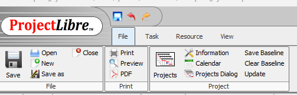

Uue kalendri loomine ProjectLibre'is
ProjectLibre võimaldab luua kalendreid, millega määrata tööpäevad ja tööajad.
- Ava ProjectLibre
- Mine menüüsse Project → Calendar
- Vali New Calendar
- Pane kalendrile nimi ja salvesta

Uue baaskalendri loomine
Uue baaskalendri loomisel saab valida, kas luua täiesti uus kalender või teha koopia olemasolevast.
- Vali Create a new Base Calendar või Make a copy of the calendar
- Sisesta kalendri nimi (nt newCalendar)
- Kinnita OK

Tööaegade muutmine
Tööaegu saab muuta vastavalt projekti vajadustele, näiteks määrata tööpäevad ja tööajad.
- Vali kalender
- Muuda tööpäevade ajad (nt 15:00–19:00, 20:00–0:00)
- Märgi puhkepäevad või eripäevad

Kalendri kasutamine ülesandes
Kalender mõjutab otseselt ülesannete kestust ja projekti ajakava.
- Määra kalender ülesandele Task Information → Advanced → Task Calendar
- Ülesannete ajad arvutatakse tööaja alusel
- Puhkepäevadel tööd ei planeerita

Ülesannete ajakava
Kalendri põhjal arvutatakse ülesannete algus- ja lõpuajad projektis.